Arrels Fundació
Cabeceras de redes sociales y un GIF animado para Arrels Fundació,
una entidad dedicada a encontrar hogares para personas sin hogar.
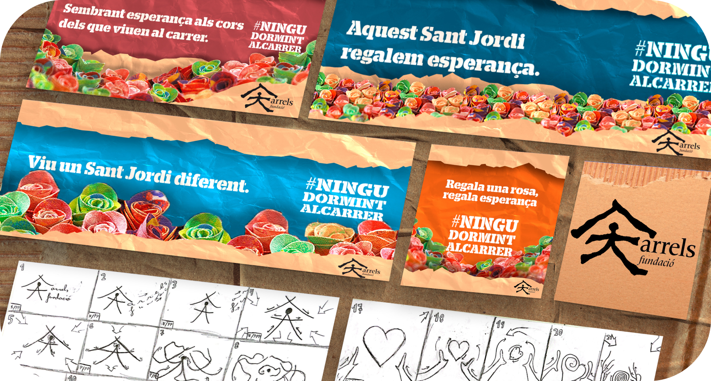
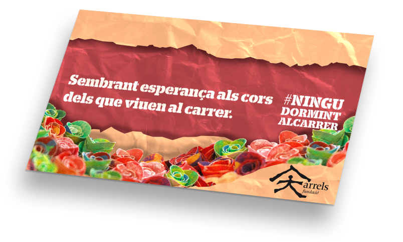
Photography
También me gusta incluir algunas de mis fotos en mis proyectos,
dándole un toque personal y algo de mi propio estilo.
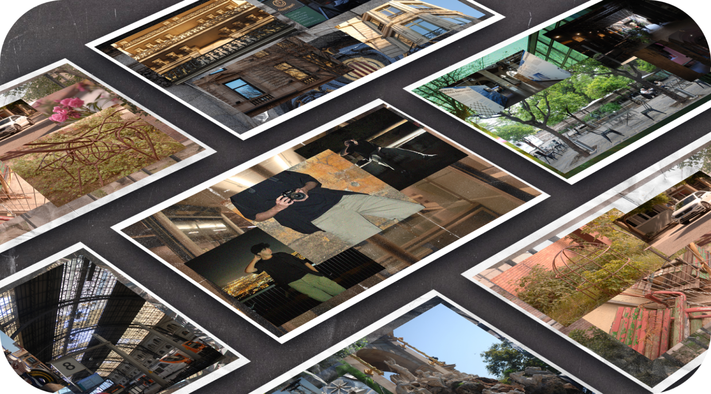
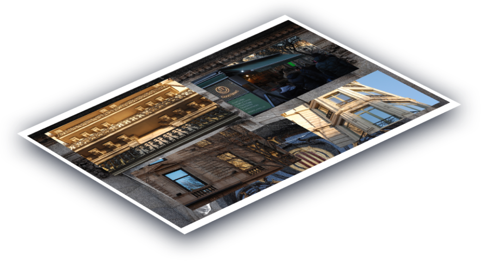
Ejemplos de mis habilidades con programas de adobe como: Photoshop,
Illustrator...
Graphic Design
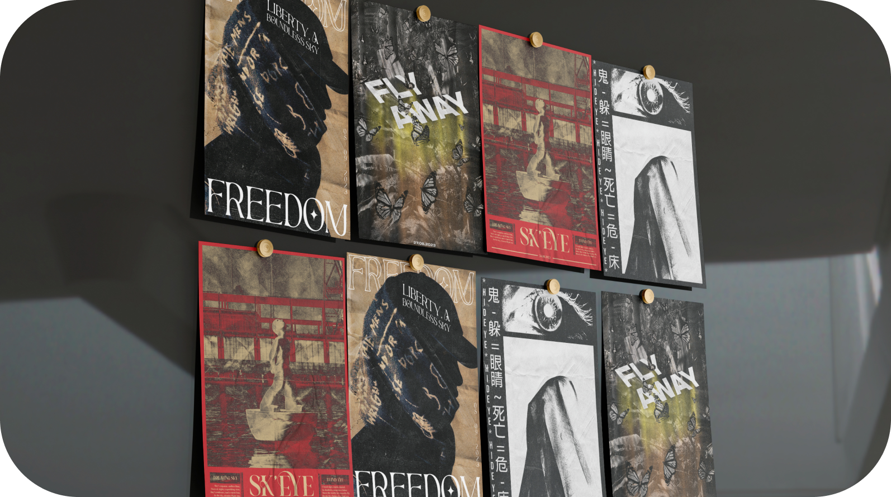
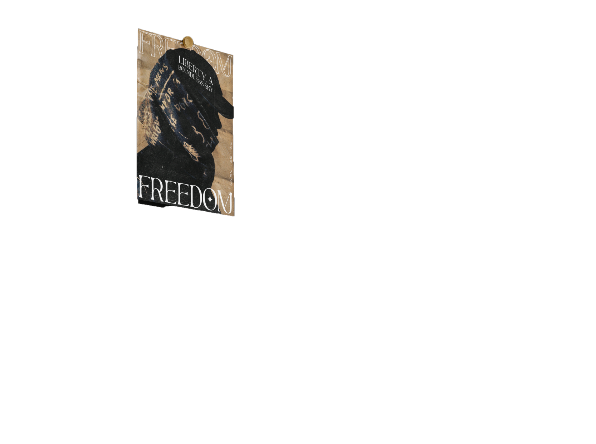
.
Infografía Realidad Aumentada
Infografía que ilustra la historia de la realidad aumentada del año
1960 hasta la actualidad.
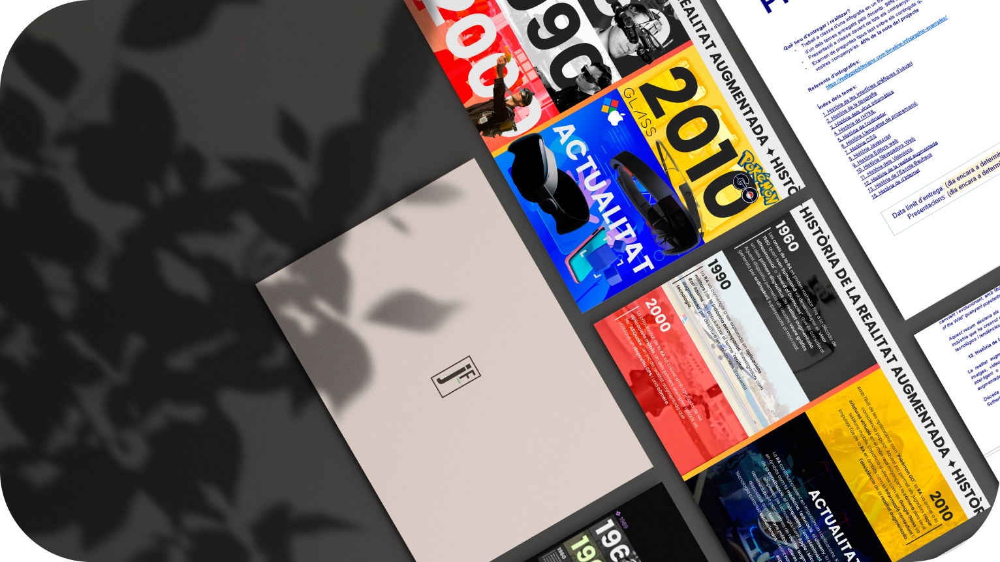
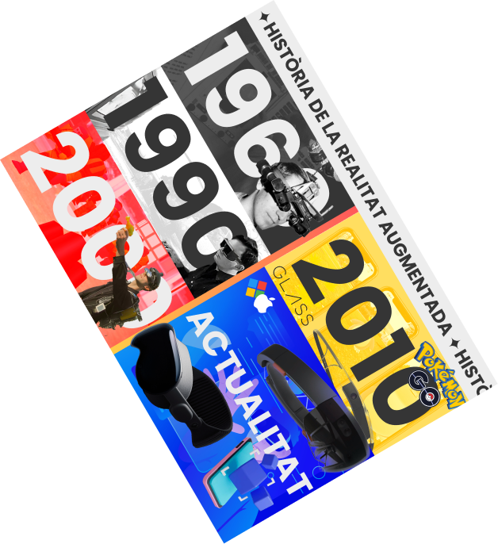
Prototipo de una página basada en el equipo de baloncesto de los
Lakers, el sitio web muestra juegos en vivo, merchandising y
eventos.
Lakers
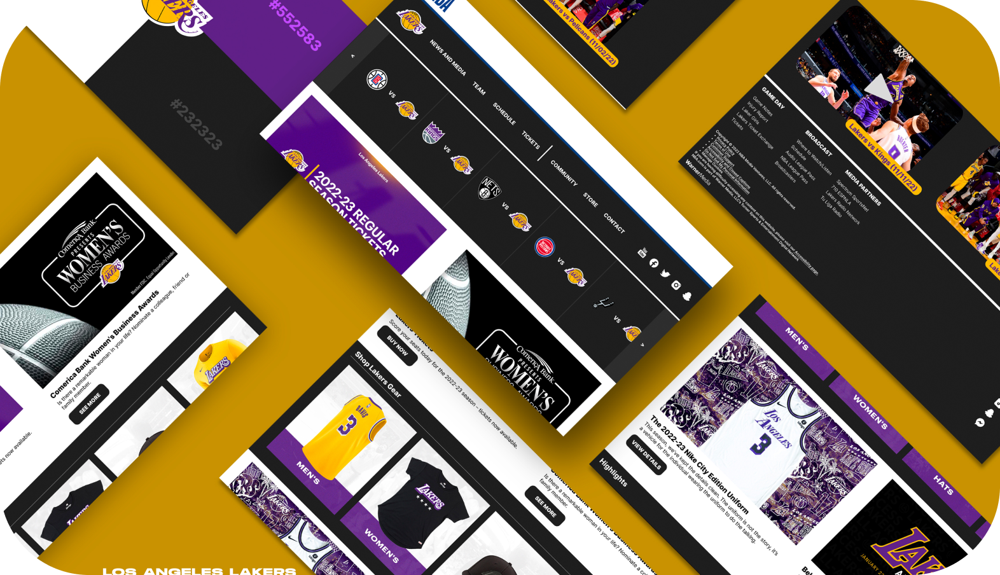
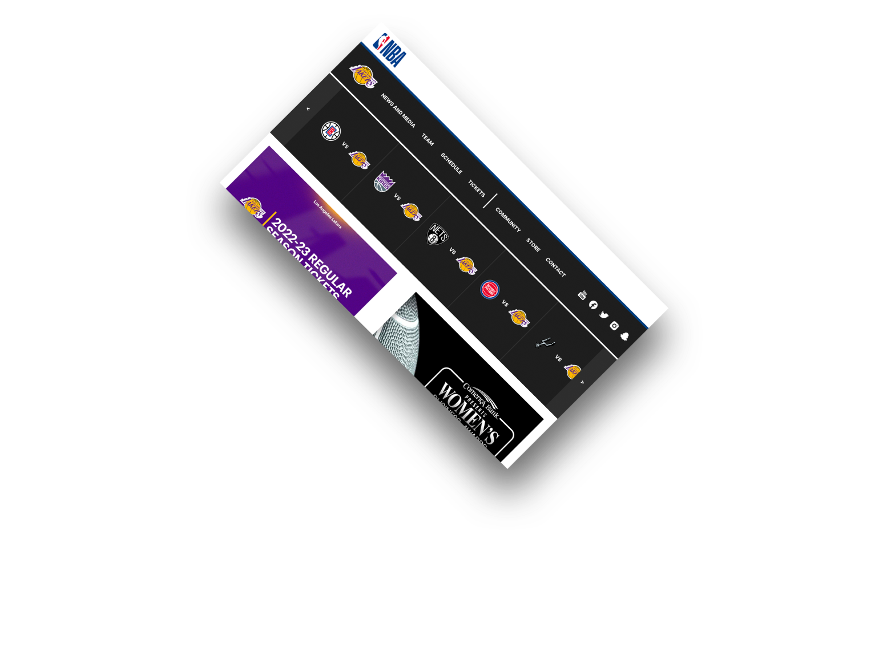
Prototipo de rediseño web basado en la pastelería de Boldú donde se
venden principalmente dulces y panes artesanales.
Boldú
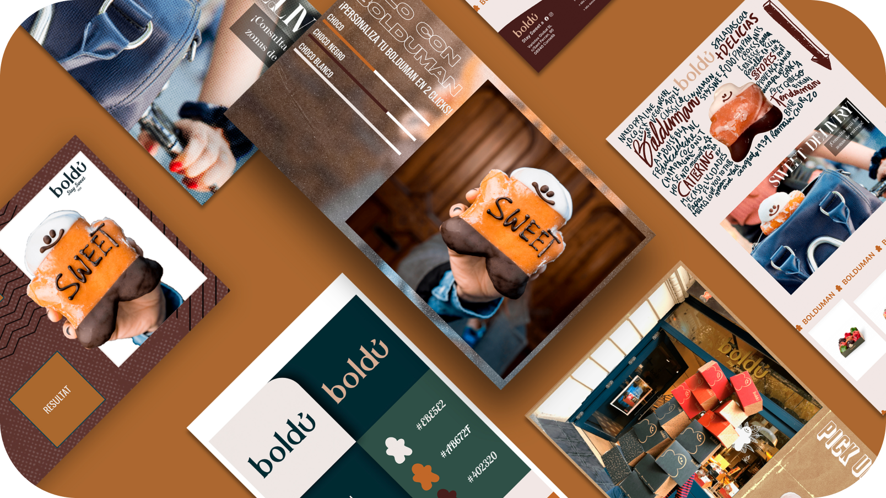
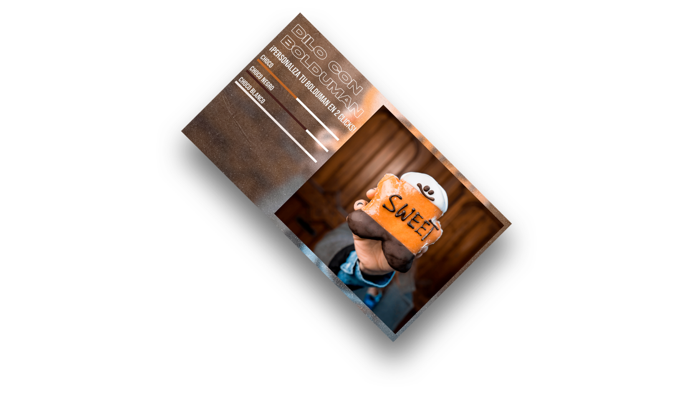